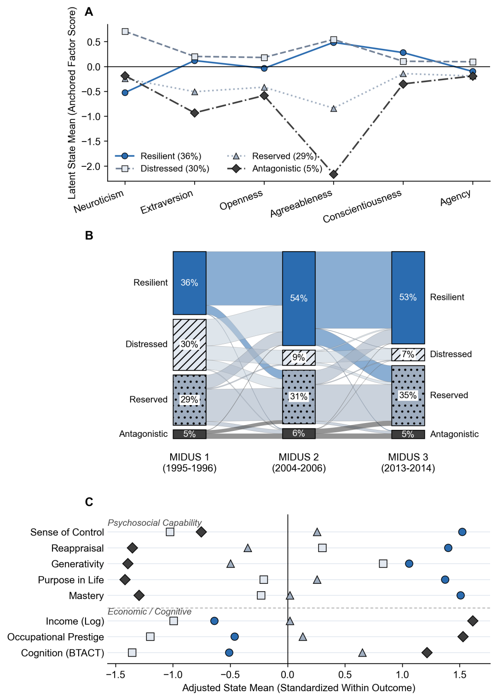
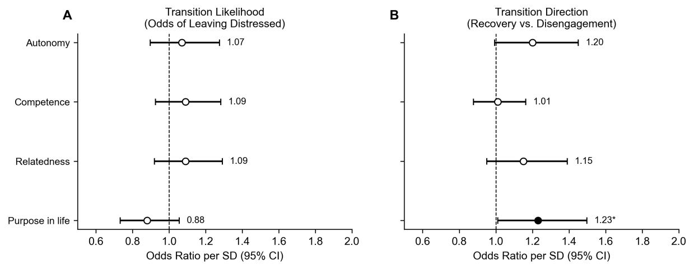

← Publication page · mjmonnot.github.io
Personality and future-of-work skills in midlife · Research companion
Among U.S. adults followed for about 20 years, the share with a high-distress personality pattern fell from 29.5% to 7.2%.
A study of the Midlife in the United States (MIDUS) national panel. It began with 7,108 adults, who were surveyed up to three times between 1995 and 2014. It asks whether people in a high-distress pattern recover or withdraw over time, and which personal resources go with each route. Every result is an association in survey data. Nothing was assigned or changed by the researcher.
Three findings
- Over three surveys about a decade apart, the share of adults in a high-distress personality pattern fell from 29.5% to 8.8%, then to 7.2%. Moves into that pattern from any other pattern were rare.
- People left the high-distress pattern by two routes. Those who recovered reported a higher sense of control about a decade later than people who stayed. Those who withdrew reported lower generativity, which the paper describes as passing on skill and knowledge to others.
- Among people who left, those with a stronger sense of purpose in life had greater odds of moving toward recovery compared with moving toward withdrawal. Knowing which pattern a person fit did not predict skills and outcomes any better than their individual trait scores did.
At a glance
What this means in practice
The decision
Employers want to keep the psychosocial skills that work depends on, such as a sense of control and generativity, while AI changes jobs. The paper follows how adults under strain come out of it over two decades.
Watch which way people leave strain, and support a sense of purpose. Most people in the high-distress pattern at the first survey had left it by the second (27.9% stayed). From the second survey to the third, 75.0% stayed. Those who recovered reported a higher sense of control than people who stayed, and those who withdrew reported lower generativity. Among people who left, a stronger sense of purpose in life was associated with greater odds of recovering compared with withdrawing. People who recovered also reported fewer health-related lost work days than people who stayed.
What was found
- The high-distress pattern became much less common over two decades, and new cases were rare.
- The two routes out differed. Recovery went with a higher sense of control and more positive reappraisal than staying. Withdrawal went with lower generativity and less reappraisal than staying.
- Recovery went with 1.34 fewer health-related lost days a month than staying. The drop for withdrawal was about half that size and not significant.
What to watch, as named in the paper
- Which way people leave strain. The paper reports that, in the diary data, people who withdrew reduced negative affect without any positive-affect recovery. The paper cautions against reading muted complaint as successful adaptation.
- Purpose in life. It was the one resource with a significant link to the route people took out.
- Daily friction. Among people in the high-distress pattern, those with more frequent daily conflicts in the first diary study had lower odds of leaving it a decade later.
What would sharpen the answer
- Test whether giving people more support changes the route they take. That needs experimental or quasi-experimental designs.
- Measure purpose and the basic psychological needs with full-length scales. The three-item purpose scale had low internal consistency (α = .29).
- Repeat the transition and diary tests in a new, preregistered study.
The first two cards follow the paper’s Results and Implications sections. The third card follows its Limitations section. To discuss a measurement plan: matt@vocentive.com.
For writers and editors
In a U.S. panel of adults followed for about 20 years, the share with a high-distress personality pattern fell from 29.5% to 7.2%. Among people who left that pattern, those with a stronger sense of purpose in life had greater odds of moving toward recovery compared with moving toward withdrawal.
- Paper
- “Afloat or Adrift: A Longitudinal Study of Latent Personality Profiles and Future-of-Work Skills Across Midlife,” by Matthew J. Monnot (Vocentive).
- Kind of study
- Observational. The same people were surveyed up to three times, about a decade apart, between 1995 and 2014. Nobody was assigned to a group or given a program.
- Status
- Preprint posted on PsyArXiv (2026). Not peer reviewed.
- Data
- Existing, publicly available data from the Midlife in the United States (MIDUS) study. The author did not collect the data. The design and analyses were not preregistered.
- Who was studied
- A U.S. national panel of 7,108 adults at the start, plus a separate MIDUS sample of 3,577 adults used to check the patterns. In the primary Study 1 sample (complete second-survey personality data, n = 3,970), the average age at the second survey was 56.11 years and 55.5% were female.
- Funding and interests
- No external funding and no conflicts of interest declared. The paper states: “Generative artificial intelligence tools were used to assist with drafting, editing, and analysis-code review; the author verified and takes responsibility for all content.”
The study supports
- “Over about two decades, the share of adults in the Distressed pattern fell from 29.5% to 7.2%, and few people entered it later.”Model-estimated shares; moves into the pattern from any other were at or below .02 per decade.
- “Among people leaving the Distressed pattern, a stronger sense of purpose in life was associated with greater odds of moving to Resilient compared with Reserved.”Odds ratio per SD of 1.23, 95% CI [1.01, 1.50]; 898 people who moved to Resilient or Reserved.
- “People who recovered reported fewer health-related lost work days than people who stayed in the Distressed pattern.”1.34 fewer days a month, 95% CI [−2.12, −0.55], after adjusting for earlier lost days.
It does not support
- “Purpose causes recovery.”The design is correlational. Purpose and the basic needs were not manipulated, so confounds cannot be ruled out.
- “All three basic psychological needs predicted which way people left.”Autonomy was marginal (p = .059), relatedness was not significant (p = .15), and competence showed no link (p = .89).
- “Personality patterns predict skills better than trait scores.”In a separate cross-sectional test at the second survey (a two-class mixture), class membership added essentially no prediction over the six continuous traits (ΔR² from −.002 to +.007).
- “The Distressed pattern showed up again as its own group in the second sample.”It did not. The second sample again favored four patterns and reproduced the Resilient pattern. The Distressed pattern is defined by its place in the long-run transitions.
- “The dollar figures are the return on a program.”The paper calls them illustrative projections from the panel. They are not treatment-effect estimates.
Monnot, M. J. (2026). Afloat or adrift: A longitudinal study of latent personality profiles and future-of-work skills across midlife [Preprint]. PsyArXiv. https://doi.org/10.31234/osf.io/9r6hd_v1
Questions, or a quote: Matthew J. Monnot, matt@vocentive.com.
1 · The high-distress pattern became rare over two decades
The paper sorted adults into four personality patterns from six traits measured at each survey. Resilient is lowest in neuroticism and high in agreeableness and conscientiousness. Distressed is highest in neuroticism, with agreeableness and extraversion preserved. Reserved is modestly low in extraversion and agreeableness. Antagonistic sits 2.2 SD below the mean in agreeableness. Pick a pattern to see its model-estimated share at each survey.
The Distressed share fell from 29.5% at the first survey (1995 to 1996) to 8.8% at the second (2004 to 2006) and 7.2% at the third (2013 to 2014). Over the same surveys the Resilient share went from 36.4% to 54.3%, then 53.3%. The paper reads the pattern as episodic distress resolving over a long interval, which leaves a small enduring group.
2 · Where people went next
The paper’s transition table gives, for each starting pattern, the share found in each pattern at the next survey. Pick a starting pattern to see its moves in each decade.

3 · Two routes out, two different skill pictures
Among people in the Distressed pattern at the first survey, the paper compared those who moved with those who stayed, on skill levels at the second survey about a decade later. Values are baseline-adjusted differences from people who stayed, in SD units. Pick a route.
Income and occupational prestige at the second survey did not differ between people who recovered and people who stayed (all p > .50; exploratory). Gains in a person’s own profile elevation went with skill gains in both decades. For reappraisal the association was β = .39, 95% CI [.36, .42], then .30, 95% CI [.26, .33]. Change on the cognitive test battery was small by comparison (β = .04).
4 · Purpose and the route out
The paper tested four personal resources measured at the first survey, in two ways. The route test asks, among the 898 people who moved to Resilient or Reserved, whether a resource went with greater odds of moving to Resilient compared with Reserved. The leaving test asks whether it went with leaving the Distressed pattern at all. Pick a test.

In the full panel, autonomy went with later gains in sense of control (β = .04 in both decades), and relatedness went with later gains in reappraisal (β = .05, then .06). Competence went with gains in generativity in the first decade only (β = .03). The paper describes these effects as small per decade.
5 · Lost work time
At every survey MIDUS asked how many days in the past 30 people were unable to work or do normal activities because of physical or mental health, and how many days they had to cut back. The paper counts lost days as days unable plus half of cut-back days.
People who recovered reported 1.34 fewer health-related lost days a month than people who stayed in the Distressed pattern.
At the second survey, adjusted lost days a month were 3.09 in the Distressed pattern, 1.66 in Reserved, 1.35 in Antagonistic and 1.24 in Resilient (p < .001).
How to read this. Both groups were in the Distressed pattern at the first survey. The difference adjusts for earlier lost days and for demographics: 95% CI [−2.12, −0.55], p = .001, with adjusted means of 1.53 and 2.85 days. People who withdrew had a smaller drop that was not significant (−0.76, 95% CI [−1.80, 0.27], p = .15).
The paper also puts a dollar value on lost days, using personal income (2004 to 2006 dollars). Distressed workers lost roughly $5,600 a year in productive time, against $1,800 for Resilient workers. Recovery went with $3,049 less lost value per worker-year than staying (95% CI [−$5,038, −$1,060]). Withdrawal went with $3,209 less (95% CI [−$5,690, −$728]), and the paper notes that this figure reflects wage composition as much as day counts. It calls the dollar figures illustrative projections from the panel. They are not treatment-effect estimates.
6 · What the study found, in order
- Four personality patterns. The four-pattern solution held up under many random starts and in a second, independently developed program, with 99.5% average agreement on who was in which pattern. Differences between patterns were mostly in overall level, with smaller differences in shape.
- A separate sample. A separate MIDUS sample favored four patterns and reproduced the Resilient pattern (Tucker’s φ = .81). Its links with skills matched. The Distressed pattern did not appear as its own group in the Refresher sample, or in the core second-survey sample on the same test; it is defined by its place in the long-run transitions.
- Patterns did not beat traits. In a separate cross-sectional test at the second survey (a two-class mixture), class membership added essentially no prediction over the six continuous traits (ΔR² from −.002 to +.007).
- Skills and pay pointed different ways. Resilient members reported the highest psychosocial skills. Antagonistic members reported the highest income and occupational prestige, and scored highest on analytic performance. Their life satisfaction (7.35) was close to that of Distressed members (7.36; Resilient 7.96).
- The Distressed share fell (Hypothesis 1, supported). 29.5% to 8.8% to 7.2%, with moves into the pattern at or below .02 from every starting pattern.
- Two routes out (Hypothesis 2, supported). Recovery went with higher sense of control (+0.31 SD) and reappraisal (+0.21 SD) than staying. Withdrawal went with lower generativity (−0.42 SD) and reappraisal (−0.21 SD).
- Profile gains went with skill gains (Hypothesis 3, supported). For example, sense of control β = .38, 95% CI [.35, .41], then .32, 95% CI [.29, .35].
- Purpose and the route out (Hypothesis 4, partial support). Purpose odds ratio per SD 1.23, 95% CI [1.01, 1.50], for moving to Resilient versus Reserved among the 898 movers to those two patterns; autonomy marginal; relatedness and competence not significant. No resource went with leaving at all.
- Each need had its own skill link (Hypothesis 5, partial support). Two of the three planned links held in both decades; the competence link held in the first decade only.
- Lost work time (Hypothesis 6, supported). Recovery went with 1.34 fewer lost days a month than staying; the drop for withdrawal was not significant.
- Daily diaries. In diaries from 1,106 people at the second survey, the patterns differed on six of seven daily measures. The paper reports that people who recovered faced the same stressor exposure (the share of days with any stressor) as people who stayed but appraised events as less severe, and their positive mood was higher (2.71 vs. 2.45).
For specialists
The study design and the main reported estimates in one place. Sources are the preprint’s Method and Results, with Tables 3 to 10 and Figures 1 and 2.
| Design | MIDUS core panel: M1 1995 to 1996; M2 2004 to 2006; M3 2013 to 2014. MIDUS Refresher (2011 to 2014) used strictly as an external validation sample. Indicators: MIDI adjective ratings for the Big Five plus Agency, entered as ESEM factor scores anchored to the M1 metric. Nonexperimental and observational; not preregistered. |
|---|---|
| Samples | Baseline N = 7,108; joint latent Markov model (FIML) N = 6,438; complete M2 personality N = 3,970 (mean age 56.11, SD = 12.32; 55.5% female); three-wave complete N = 2,615; employed at M2 N = 2,493; Refresher N = 3,577; diaries N = 2,314. |
| Profiles | Joint latent Markov model, k = 4 after multistart re-enumeration (k = 2 to 5). BIC kept falling through k = 5, but that solution failed a 100-start stability audit. Mplus 8.8: log-likelihood = −84,834.97; BIC = 170,301; entropy = .71. Modal agreement between implementations 99.1% to 99.7% (M = 99.5%). M1 shares: Resilient 36.4%; Distressed 29.5%; Reserved 29.0%; Antagonistic 5.1%. |
| Research question 2 | Refresher re-enumeration recovered four profiles on BIC and the Resilient prototype (Tucker’s φ = .81). Distressed did not re-emerge as a standalone cross-sectional cluster in the Refresher, nor in the core M2 sample on the same test; it is defined by its position in the three-wave transition model. |
| Research question 3 | Cross-sectional mixture of M2 factor scores (two classes in split halves; Table S1). Out-of-fold ΔR² over six continuous traits from −.002 to +.007 (sense of control: R² = .358 vs. .358); all p ≥ .05. Separation predominantly elevational. |
| Study 1 criteria | Adjusted M2 means. Table 4: Resilient vs. Distressed, sense of control 5.70 vs. 4.99; generativity 17.76 vs. 17.46. Antagonistic highest on log income (9.76) and prestige (49.04), with the BTACT composite at 0.03. Table 5 (p. 68): life satisfaction, Antagonistic 7.35; Distressed 7.36; Resilient 7.96 (omnibus p < .001). |
| Hypothesis 1 | Supported. Model-estimated Distressed share 29.5% at M1, 8.8% at M2 and 7.2% at M3. M1 to M2 from Distressed: Resilient .520; stayed .279; Reserved .184; Antagonistic .017. Entry into Distressed ≤ .02 from every origin. M2 to M3, Distressed stayed .750 (Table 7). |
| Hypothesis 2 | Supported. M2 levels of M1-Distressed movers vs. stayers, baseline-adjusted β (Table 8). Disengaged is the paper's label for the withdrawal route, movement to Reserved (p. 24; Table 9 note, p. 72). Recovered: sense of control +0.31 [.20, .42]; reappraisal +0.21 [.10, .32]; mastery +0.16 (p = .009); generativity +0.04 (p = .48). Disengaged: generativity −0.42 [−.57, −.27]; reappraisal −0.21 [−.37, −.06]; mastery −0.17 (p = .046); sense of control −0.04 (p = .60). N = 1,100 to 1,119. |
| Hypothesis 3 | Supported. Within-person elevation gains to skill change: reappraisal β = .39 [.36, .42] and .30 [.26, .33]; sense of control .38 [.35, .41] and .32 [.29, .35]; all p < .001. BTACT change β = .04 [.02, .07], p = .002. |
| Hypothesis 4 | Partial support. Direction among movers to Resilient versus Reserved (n = 898), OR per SD: purpose 1.23 [1.01, 1.50], p = .039; autonomy 1.20 [0.99, 1.45], p = .059; relatedness 1.15 [0.95, 1.39], p = .15; competence 1.01 [0.88, 1.16], p = .89. Employed at M1 (n = 657): purpose 1.25 [1.01, 1.55]. Leaving vs. staying (n = 1,063): ORs 0.88 to 1.09, none significant. Intervals are approximate Wald reconstructions where standard errors were not preserved. |
| Hypothesis 5 | Partial support (Table 10). Autonomy to sense-of-control change β = .04 [.01, .07] in both intervals; relatedness to reappraisal change .05 [.02, .08] and .06 [.03, .09]; competence to generativity change .03 [.003, .06], M1 to M2 only. |
| Hypothesis 6 | Supported. Adjusted impaired days per month at M2: Distressed 3.09; Reserved 1.66; Antagonistic 1.35; Resilient 1.24 (p < .001). Recovered vs. stayed −1.34 [−2.12, −0.55], p = .001; disengaged −0.76 [−1.80, 0.27], p = .15. Human-capital value per worker-year: recovered −$3,049 [−$5,038, −$1,060]; disengaged −$3,209 [−$5,690, −$728]. |
| Daily diaries | NSDE II (n = 1,106): profiles differed on six of seven daily-ecology measures. Recovered movers’ positive affect 2.71 vs. stayers 2.45 (p = .002). M1 diary: interpersonal-conflict exposure OR = 0.64 per SD for leaving Distressed (p = .001). |
| Limits | Correlational design. Several analyses are exploratory, including the diary analyses. Exploratory tests were not adjusted for multiple comparisons. Short need scales: purpose α = .29; autonomy α = .45. Entropy .71. |
| Materials | MIDUS data are publicly available through the MIDUS portal and ICPSR (Appendix B). Analysis code and derived output tables are available from the author upon reasonable request. No respondent-level data are hosted on this page. |
What this site does and does not show
- No respondent-level data are hosted here. Every estimate, interval, share and sample size on this page is a published aggregate from the preprint. Nothing is estimated in the browser.
- There is no “of every 100 people” picture. The paper reports the pattern shares and moves without interval ends, so the page gives them as published numbers.
- The dollar figures use the human-capital method and partly reflect wage composition. The paper calls them illustrative projections from the panel. They are not treatment-effect estimates.
- No intervention is evaluated. The study identifies markers that go with recovery-oriented moves; whether changing them changes outcomes was not tested.
Tools used
Analyses: R 4.5.2 and Mplus 8.8, as reported in the preprint.